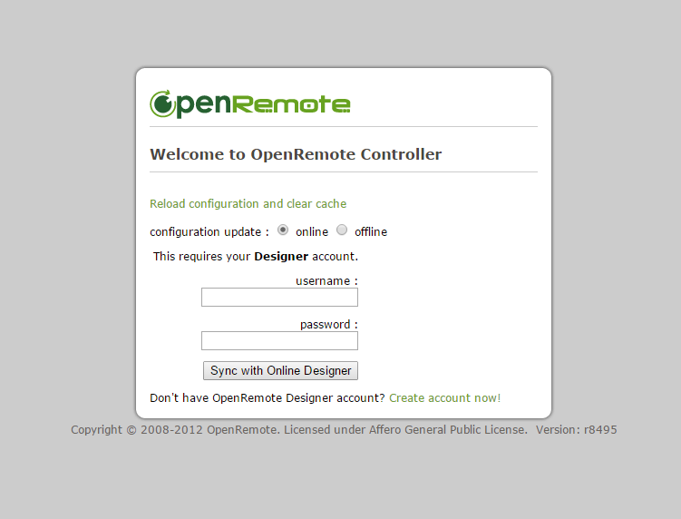

Hi Guys , I am a newbie and trying to install controller but am getting error like this any help Please Thxxx
Java version is saying Microsoft Windows Version 6.1.7601
Copyright (c) 2009 Microsoft Corporation. All rights reserved.
C:\Windows\system32>cd..
C:\Windows>java -version
java version "1.8.0_40"
Java(TM) SE Runtime Environment (build 1.8.0_40-b26)
Java HotSpot(TM) Client VM (build 25.40-b25, mixed mode,
But I did install JDK 16 as on site I don't get it why not changing
C:\OpenRemote-Controller-2.1.0>bin\openremote run
Using CATALINA_BASE: C:\OpenRemote-Controller-2.1.0
Using CATALINA_HOME: C:\OpenRemote-Controller-2.1.0
Using CATALINA_TMPDIR: C:\OpenRemote-Controller-2.1.0\temp
Using JRE_HOME: C:\Program Files\Java\jdk1.6.0_18
05-Apr-2015 21:35:50 org.apache.catalina.core.AprLifecycleListener init
INFO: The APR based Apache Tomcat Native library which allows optimal performanc
e in production environments was not found on the java.library.path: C:\OpenRemo
te-Controller-2.1.0\webapps\controller\WEB-INF\lib\native
05-Apr-2015 21:35:50 org.apache.coyote.http11.Http11Protocol init
INFO: Initializing Coyote HTTP/1.1 on http-8080
05-Apr-2015 21:35:50 org.apache.catalina.startup.Catalina load
INFO: Initialization processed in 2502 ms
05-Apr-2015 21:35:51 org.apache.catalina.core.StandardService start
INFO: Starting service Catalina
05-Apr-2015 21:35:51 org.apache.catalina.core.StandardEngine start
INFO: Starting Servlet Engine: Apache Tomcat/6.0.18
05-Apr-2015 21:35:51 org.apache.catalina.startup.HostConfig deployWAR
INFO: Deploying web application archive webconsole.war
05-Apr-2015 21:35:55 org.openremote.controller.bootstrap.Startup redirectJULtoLo
g4j
INFO: Initialized JUL to LOG4J Redirector.
INFO 2015-04-05 21:36:00,160 :
********************************************************************************
Controller definition was not found in this OpenRemote Controller instance.
If you are starting the controller for the first time, please use your web
browser to connect to the controller home page and synchronize it with your
online account.
********************************************************************************
Could not find a controller definition to load at path '..\webapps\controller\co
ntroller.xml' (for version 2.0)
INFO 2015-04-05 21:36:00,162 : Controller Definition File Watcher for Default De
ployer started.
05-Apr-2015 21:36:02 org.apache.coyote.http11.Http11Protocol start
INFO: Starting Coyote HTTP/1.1 on http-8080
05-Apr-2015 21:36:02 org.apache.catalina.startup.Catalina start
INFO: Server startup in 11344 ms
{kind=link}
|
Hi Sha, It may not look like but you have successfully installed the controller. The controller is now up on running on your computer you are using as the server. If you are on the same machine that you installed the software on then open a web browser and type in localhost:8080/controller. You should see a login screen. The next step will be to go to https://composer.openremote.org/demo/register.jsp and create your free user account. You will then use the credentials from your designer account to sync it with your local controller. There is an e-book available called how to smart home by Othmar Kyas. It is very helpful and not very expensive. You can find it here: http://howtosmarthome.com/?page_id=40. I highly recommend it. Good luck, Andy |
|
Hi Andy, Thaxx but I did what you saying I try to put my localhost but browser keep coming blank page not opening though |
|
Sha, Looks like you are running a newer version of Java which has some issues with OR. I recommend running Java 6 update 45 which shows up as the following in the command line when you issue do a java -version in the command prompt. c:\Java\bin>java -version Other than that try YOUR_OR_CONTROLLER_IP:8080/controller from a web browser anywhere on your local network. For example, I use http://10.0.0.50:8080/controller/ It should however work with http://localhost:8080/controller/ Good luck! |
|
By the way, you will have to register for a free account with Oracle before they will let you download an older version. I also recommend turning off any Java auto update features. Last thing, you will need to uninstall the newer version of Java 1.8.0_40 completely. You may have the older JDK but the Java runtime environment on your machine looks like it is the newest version. |
|
Will delete new java & try again when i get home as you said andy and thank you again buddy nice 1 |
|
Unfortunate still not working , I try uninstall java and I restart also I re install java 6 SE I did check on cmd ,The java is fine now is saying C:\Users\SHA>java -version But I know you said go for update 1.6.0.45 will try another go & will see And my ip4 is http://192.168.1.2:8080/controller |
|
Hi sha. If the ip address of the machine that run controller is 192.168.1.2:8080/controller you are supposed to be in a page like this after hit enter.  When i started with openremote i take care of the following details. 1- proper configuration of java 1.6.0.18 keep trying and let's the fun begin for you. |